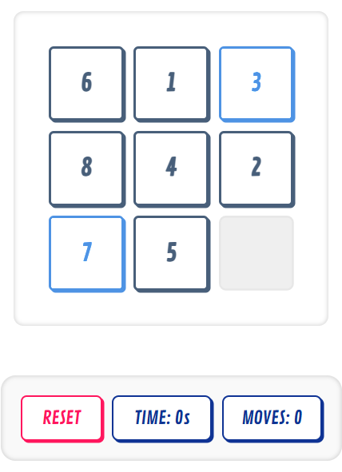

- This Sliding Toys website that might violate the 6th point, but because it
is an element of the webpage that looks clickable, but actually isn't. In the game, it has two boxes with "Time" and "Moves."
They might look clickable because they share the same box around it as the other elements that are clickable.

- Framing your project in a story format can help refine your ideas because creating a story involves
emotions and human aspects to it. By applying a story to your project, you are essentially doing it as a way to
see how a potential user interacts in their everyday life that leads them to use your website. It can also give
designers an overview of how one will interact with their creation on a daily basis, and what considerations
should be made. It helps view your project in a different lens and empathize with your userbase. By
creating a narrative of someone, you can recognize that you are not creating for yourself, but somebody else
who has different perspectives and experiences that influence how they'll engage with your website. You are
able to define your typical user and discover ways that'll best accomodate and improve their experience.
- Different ways to establish hierachy in typography design is by properly utilizing the size, weight, color,
style, and placement of your typography. A website that has hierachy through these typographical elements is
"act-on". In this particular webpage, they use
different colors, different header sizes, and font weights to emphasize hierarchy as one scrolls throughout the webpage.
- Problem: Sometimes it can be difficult to find good study spots, whether it's finding one
near where you live, on your college campus, or fits a certain vibe you want. It can also be hard to tell which establishments
allow studying, provide outlets, wifi, stay open late, have a lot of traffic, etc. that will contribute to your experience.
- Audience: The audience for my project would be students (mainly college students) or people that enjoy
doing their work outside of their house or office. The main audinece age range would be from 18-30 years old. They would want it
to be easier to find the right spots to do their work or study.
- Competition: The strongest competitors would be Yelp, Google Maps, or Nooks. Yelp in particular is a strong
competitor because the app focuses solely on reviewing all kinds of places. Users can sort their search to specifically find study spaces
like cafes, coffee shops, libraries, etc. Google Maps is also a strong contender because you can look up study spots of coffee spots and
find some around you, though it lacks a focus in reviews (but it's still an implemented feature). Nooks is another competitor since it
focuses solely on study spots.
- Key Messages: Before my website, users struggle to find out if certain cafes or coffee shops are good for studying or
doing work. There might be a concern of whether outlets are available, if the establishment doesn't want guests to stay long, or if it's a
loud/busy place. However, my idea aims to make the study spot finding process easier and allow users to find a spot that meets their needs.
Our message is to help users find a spot that meets both their comfortability and work.
- Call to Action: When the audience sees our website, they will want to go out and do their work since
they will be able to find their next best study spot.
- How to Measure Succcess: Success on my website would be determined by how many users are registered,
how many people are rating, categorizing, and leaving their reviews/insight on different study spots, how
many people return to the site, search activity, and also how many times the website is shared.